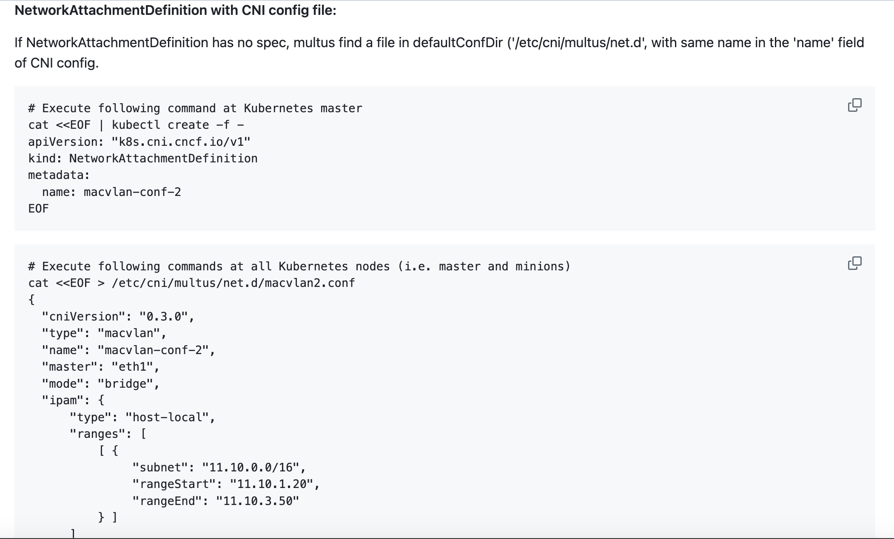
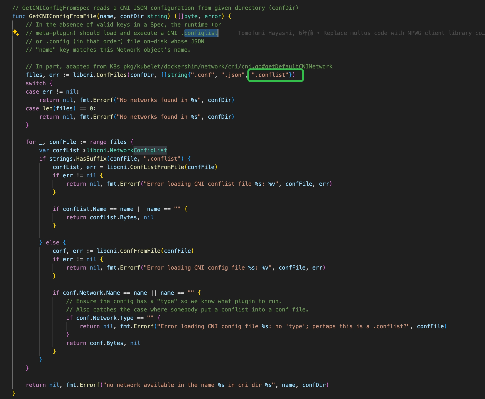
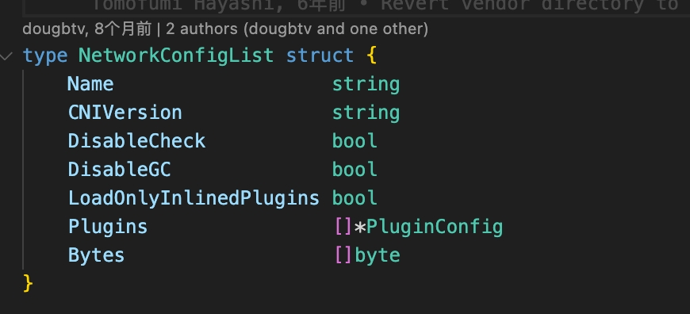

前段时间排了一个容器网络问题，根因说出来特别朴素：配置文件的后缀名写错了。
背景
我们的多网卡 RoCE 配置用的是 Multus 文档里的一个省事用法：
If NetworkAttachmentDefinition has no spec, multus find a file in defaultConfDir ('/etc/cni/multus/net.d'), with same name in the 'name' field of CNI config.

NAD 不带 spec，只写个名字，Multus 自己去节点的 /etc/cni/multus/net.d/ 下找同名 CNI 配置文件。换节点、换网卡、换网段都只改节点上的文件，NAD 不用动。这个用法跑了一年多，一直没出过事。
加个插件，Pod 起不来了
某天来了个临时需求：给容器内的多张 RoCE 网卡自动注入内核参数，于是在 CNI 配置里加了个 tuning 插件。这意味着配置文件要从「单个插件对象」改成「plugins 数组」。原来长这样：
{
"cniVersion": "0.3.1",
"name": "nac-1",
"type": "macvlan",
"capabilities": { "ips": true },
"master": "eth1",
"mode": "bridge",
"ipam": { "type": "whereabouts", "range": "192.168.10.0/24" }
}改完长这样：
{
"cniVersion": "0.3.1",
"name": "nac-1",
"plugins": [
{
"type": "macvlan",
"capabilities": { "ips": true },
"master": "eth1",
"mode": "bridge",
"ipam": { "type": "whereabouts", "range": "192.168.10.0/24" }
},
{
"type": "tuning",
"sysctl": { "<内核参数>": "<值>" }
}
]
}看着没什么问题吧？结果 Pod 直接起不来，kubelet 事件里的报错是：
Failed to create pod sandbox: rpc error: code = Unknown desc = failed to setup network for sandbox ...
plugin type="multus" name="multus-cni-network" failed (add):
... err in GetCNIConfigFromFile: Error loading CNI config file
/etc/cni/multus/net.d/nac-1.conf: error parsing configuration: missing 'type'第一反应是「Multus 是不是不支持这种多插件写法」。但报错落在解析阶段——不是 IP 分配失败，也不是插件执行失败，而是配置文件本身没被正确识别。
翻源码，找到根因
文档里没写清楚，只好去看 Multus 的源码。读配置文件的入口是 GetCNIConfigFromFile：

关键在后缀判断：只有 .conflist 走 ConfListFromFile，解析成 NetworkConfigList（内部是 Plugins 数组）；其余后缀走 ConfFromFile，按单个插件解析。

真相大白：把 plugins 数组写进 .conf 文件，解析器按单插件去读，顶层自然没有 type 字段，正好就是那句 missing 'type'。源码注释里还专门写了一句：
Also catches the case where somebody put a conflist into a conf file.
——看来踩这个坑的人不少。修复也就一句话：后缀改成 .conflist，完事。
文档只告诉你用法存在，后缀规则这种边界条件只能去源码里找，该翻就翻。不过现在有了各种 AI 工具，把报错一贴可能几秒就给你指到那行源码了——以后不知道还有没有机会这样一行行翻代码古法 debug 了，且翻且珍惜。
本文由 agent 根据复盘文档整理。